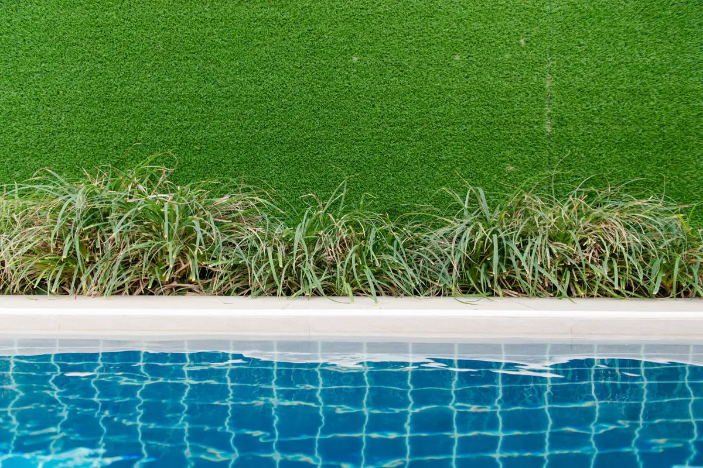

O que faz uma grama sintética durar
Quase todo problema de grama sintética nasce embaixo dela: base que não drena (vira poça e cheiro ruim), base sem compactação (afunda e ondula) e emenda mal colada (abre e vira tropeço). O tapete em si costuma ser a parte menos problemática.
Por isso tratamos a grama sintética como serviço de engenharia: base dimensionada para o uso, drenagem resolvida e, quando é área de queda de playground, manta amortecedora com espessura compatível com a altura do brinquedo.
Onde instalamos grama sintética
Playground
A grama sintética deixa o playground bonito e confortável, mas sozinha não é piso de segurança. Na área de queda ela vai sobre manta amortecedora, conforme a ABNT NBR 16071. Fora da área de queda, pode ir direto sobre a base. Se a área exige mais amortecimento, o caminho é o piso emborrachado.
Área de lazer, pet place e jardim de condomínio
Base drenante permeável e preenchimento adequado. No pet place, base que permita lavagem frequente e escoamento rápido — é o que evita odor.
Terraço, cobertura e varanda
Instalação sem furar a impermeabilização, com caimento preservado até o ralo e verificação da carga sobre a laje quando há preenchimento com areia. Um terraço que vaza depois da grama é o pior cenário para o morador de baixo.
Campo society e quadra
Fio próprio para esporte, base com brita graduada compactada, preenchimento com areia e borracha, linhas demarcadas. Combina com a cobertura metálica de quadra que também montamos.

Etapas da instalação
| Etapa | O que é feito |
|---|---|
| Visita e medição | Área, uso, base existente, pontos de escoamento e acesso de material |
| Preparo da base | Remoção de solo orgânico, brita graduada ou pó de brita compactado — ou regularização do contrapiso |
| Drenagem | Caimento, dreno ou ralo; manta drenante quando necessário |
| Manta amortecedora | Em área de queda de playground, na espessura exigida pela altura do brinquedo |
| Assentamento | Tapetes no mesmo sentido do fio, emendas com fita e adesivo de poliuretano |
| Preenchimento | Areia e/ou borracha conforme o tipo de grama e o uso |
| Entrega | Escovação, acabamento de bordas, orientação de manutenção e ART |
Qual grama sintética escolher
| Uso | Fio e altura usuais | Base |
|---|---|---|
| Paisagismo e jardim | Fio macio, aparência natural | Pó de brita compactado |
| Playground | Fio macio, resistente a tráfego | Base + manta amortecedora na área de queda |
| Pet place | Fio curto, fácil de lavar | Base muito permeável |
| Terraço e varanda | Fio médio, tapete leve | Contrapiso impermeabilizado com caimento |
| Campo society | Fio esportivo, mais alto | Brita graduada compactada + preenchimento |
Se você já tem a grama comprada, instalamos. Se ainda não comprou, indicamos a especificação para o seu uso antes da compra.
Perguntas frequentes sobre grama sintética
Grama sintética serve como piso de playground?
Só quando é assentada sobre manta amortecedora com espessura compatível com a altura de queda do brinquedo. Grama sintética aplicada direto sobre concreto ou contrapiso é macia ao pisar, mas praticamente não reduz o impacto de uma queda — não é piso de segurança pela ABNT NBR 16071.
Pode instalar grama sintética sobre contrapiso ou laje?
Pode, desde que haja caimento para o ralo e a impermeabilização esteja íntegra. Em laje e terraço, a instalação não pode furar a manta impermeável e é preciso considerar o peso do preenchimento.
Quanto custa instalar grama sintética?
Depende da metragem, do tipo de grama, do preparo de base necessário e de haver manta amortecedora (playground). Mande fotos e medidas da área pelo WhatsApp e retornamos com escopo e valor, com ART.
Grama sintética alaga?
Não, se a base for drenante e tiver caimento. Grama que alaga quase sempre foi instalada sobre solo argiloso sem preparo ou sobre contrapiso sem caimento.
Qual a manutenção da grama sintética?
Escovação periódica para levantar o fio, reposição de preenchimento nas áreas de mais uso, retirada de folhas e lavagem — no pet place, com mais frequência. Entregamos a orientação junto com o serviço.
Instalação de grama sintética na Grande Vitória
Playground, área de lazer, terraço e campo society em condomínios, escolas, casas e clubes:
Tem área para gramar?
Mande fotos e medidas. Retornamos com o tipo de grama, preparo de base e valor.